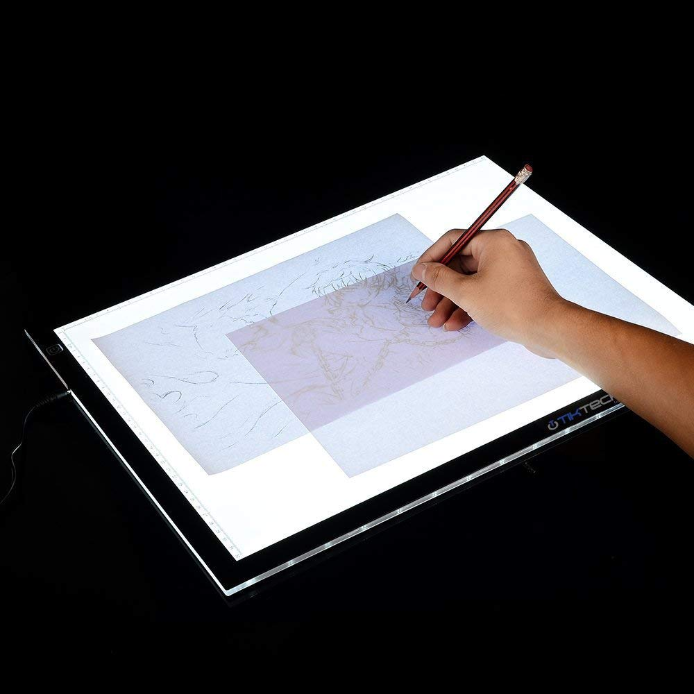
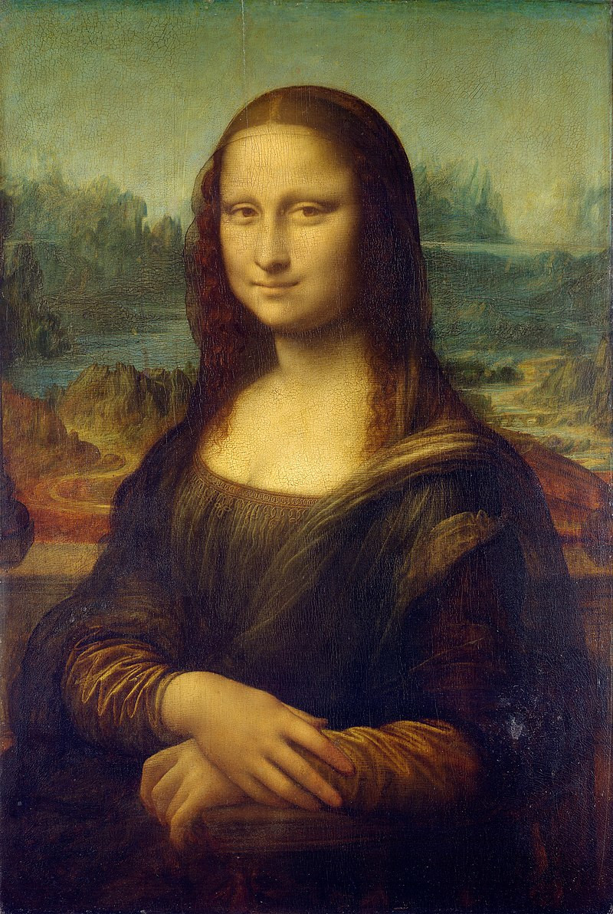
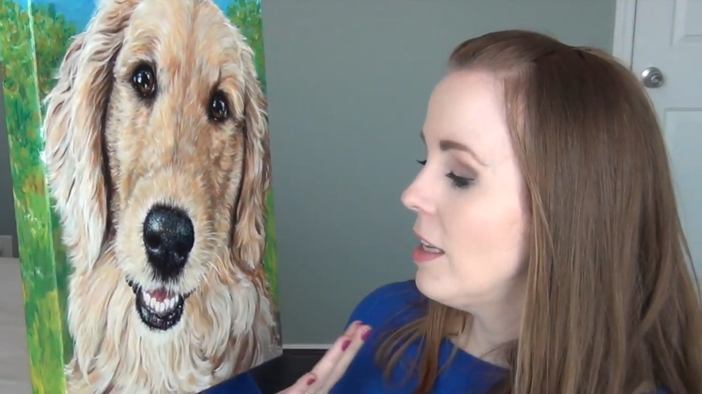

The Artist
Tuesday • December 31st 2019 • 9:48:35 pm
Drew Struzan - Tracing

Quote by Frida Kahlo
I never paint dreams or nightmares. I paint my own reality.
-- Frida Kahlo - https://en.wikipedia.org/wiki/Frida\_Kahlo
Tracing Paper
Tracing paper does not need batteries, just a pencil.
Anybody can trace a printout of something they like with tracing paper.
What many don't understand is that after tracing, you need to black out the
opposite side of your trace to create a home made, Transfer Paper.
How to Transfer an Image Using Tracing Paper
Tracing Paper
On the front you have your trace. On the back you deposit as much graphite
as needed.
Then you place your trace on proper Drawing Paper. Then, go over your trace
one more time, the graphite on the back will now transfer to your drawing
paper.
Graphite Paper

By blacking out the back of your trace you create Graphite Paper.
You can skip this step by buying pre-made Graphite Paper. (Pre-made
Graphite Paper is a lot darker and sharper. If you trace something that
has a lot of small details, you should use Graphite Paper.)
Now you will place Graphite Paper over your Drawing paper, and then put
your trace on top, and then go over it with a pencil.
Getting Started: Three Ways to Transfer an Image to Watercolor Paper
Light Box

Lightbox will help you with tracing and creation of new designs.
A light box is an interesting addition to the process of tracing, it does
need batteries, or a USB port. When buying an inexpensive light box ($25),
you might want to consider getting a tiny battery powered projector
($75) as well.
How to trace a picture.
Digital Projector

Digital projectors ($100 - $400) are the fastest way to create murals and
paintings.
Home Wall Painting Using projector - DIY
Digital Projector

You can take a selfie, connect your phone to the projector, and begin
painting.
Even better you can connect your Raspberry PI, or Laptop and use a program
like GIMP where you can manipulate your source material to reveal
edges, colors, or adjust contrast while painting to reveal the brightest
parts of your source material.
Tip: Consider putting registration marks in your image and on your canvas,
it is easier to resume your work after you bump the projector or call it a
night.
Idea: Record your painting progress and upload a sped up movie to YouTube.
Mona Lisa

Using the Mona Lisa to show what you can get by connecting your projector
to your laptop, and using a program like GIMP.
Mona Lisa Edge Detection

Discover all the hard edges where color changes abruptly.
Mona Lisa Simplified Color Palette

Show the color palette.
Mona Lisa Highlights

Reveal the brightest parts (highlights) in Mona Lisa.
How to use GIMP for beginners tutorial

Learn GIMP in 30 minutes, Complete Tutorial for Beginners

Working With Filters - GIMP Tutorials

Sfumato, Unione, Chiaroscuro, Cangiante

Painting the Portrait: The Grisaille Method in Oil Part 1/2
Painting the Portrait: The Grisaille Method in Oil Part 2/2
Grisaille Method with Jon deMartin

Brianna Schretlen and her Fur Kids

"I'm a professional graphic designer and illustrator with a soft spot for
fur kids. I've always loved painting and drawing animals. Our pets are like
family, and I truly enjoy working on tributes to these silly, lovable,
trusting and loyal creatures. In addition to Bri Pet Portraits, I am also
on Etsy under the shop Bri Baby Art - a shop featuring custom artworks for
nurseries and kids room decor." (from BriPetPortraits on Etsy)
Custom Pet Portraits. Online business where people upload an image, and you
create a large canvas painting, or drawing. It looks like the price is
about $50 per portrait. Throw in a bonus, record a time lapse video of the
painting for advertising, portfolio, and internet points.
Pet portrait time-lapse.
Quote by Henri Matisse
Creativity takes courage.
-- Henri Matisse - https://en.wikipedia.org/wiki/Henri\_Matisse
Please, never draw alone.
If you are going to draw with pencils make sure to use blending stumps and
smudge the graphite to give it a photo-realistic look. Get an [art
board](https://www.amazon.com/s/ref=nb_sb_noss?url=search-alias%3Darts-crafts\&field-keywords=Sketch+Tote+Drawing+), Drawing Paper (not Sketching Paper), tin of pencils,
battery powered eraser and eraser shield, and head for the DIA, or a
Museum, or even a Coffee Shop.
Blending Stumps for Beginners
What's an Eraser Shield?